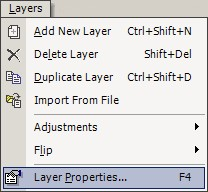
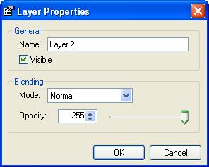

Layer Properties
|
 In the image to the right  There are 7 blending modes that work between layers: Normal, Multiply, Additive, Difference, Screen, Lighten, Darken.
Note: You can perform the Delete Layer Operation from either the drop-down menu (Layers-->Delete Layer) or from the Layers Window. |
| |
|
| A Normal blend between two layers at an opacity of 152 | An interesting effect caused by duplicating a layer twice, applying various blur effects to the new layers, and then setting the new layers' blending properties to Lighten. |